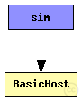
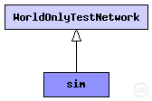

This documentation is released under the Creative Commons license
This documentation is released under the Creative Commons licenseTest network for blackboard (emit/subscribe) tests.

The following diagram shows usage relationships between types. Unresolved types are missing from the diagram. Click here to see the full picture.
The following diagram shows inheritance relationships for this type. Unresolved types are missing from the diagram. Click here to see the full picture.
| Name | Type | Description |
|---|---|---|
| WorldOnlyTestNetwork | network |
Basis definition of test networks which are not common to MiXiM network definition, because of missing connectionManager. |
| Name | Type | Default value | Description |
|---|---|---|---|
| playgroundSizeX | double |
parametes for the framework |
|
| playgroundSizeY | double | ||
| playgroundSizeZ | double | ||
| numHosts | int | 2 |
| Name | Value | Description |
|---|---|---|
| isNetwork | ||
| display | bgb=$playgroundSizeX,$playgroundSizeY,white,,;bgp=0,0 |
| Name | Type | Default value | Description |
|---|---|---|---|
| world.useTorus | bool | false |
use the playground as torus? |
| world.use2D | bool | false |
use a 2-dimensional world? |
// Test network for blackboard (emit/subscribe) tests. network sim extends WorldOnlyTestNetwork { parameters: @display("bgb=$playgroundSizeX,$playgroundSizeY,white,,;bgp=0,0"); submodules: node[numHosts]: BasicHost { parameters: numHosts = numHosts; @display("p=50,50;i=node"); } connections allowunconnected: // all connections and gates are to be generated dynamically }
This documentation is released under the Creative Commons license